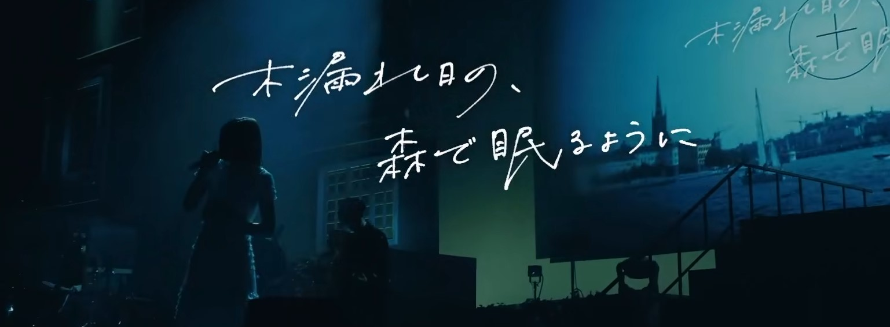

乐队简介
ヨルシカ这个名字出自歌曲「雲と幽霊」中的歌词「夜しかもう眠れずに」。乐队logo的主题为月与月的互面，同时也成为了时钟的指针，意思是从6点开始为夜晚。
2017年组合成立，于4月21日发布歌曲《靴の花火》宣布出道，在同年6月28日正式发售首张迷你专《夏草が邪魔をする》。
2017年7月9日首次live「夏草が邪魔をする」举行。
2018年5月9日发售第二张迷你专《負け犬にアンコールはいらない》，在日本Oricon Weekly 独立音乐专辑榜中最高取得排名第5的位置。
2019年4月10日发售第一张正式专《だから僕は音楽を辞めた》，在日本Oricon Weekly 独立音乐专辑榜中最高取得排名第5的位置。
2019年8月28日发售第二张正式专《エルマ》，该专辑为上一张专辑的续篇。
2019年10月，官方粉丝俱乐部“ヨルシカ smartphone site”开张。
2019年10月17日至10月22日，举行了巡回演唱会「月光」。
2019年12月11日，举行了巡回演唱会「月光」追加公演。
2020年2月，获得“第34届日本金唱片大奖”年度最佳新人邦乐。
2020年2月8日，由于乐队推特账号粉丝数超过n-buna本人账号，再加上n-buna有随意按自己的想法作曲，并退居幕后的意愿，n-buna在发布一系列告别语后，删除其推特账号上的全部推文，随后将账号删除。
2020年6月18日，为上映的长篇动画电影《想哭的我戴上了猫的面具》提供主题曲《花に亡霊》、插曲《夜行》、片尾曲《嘘月》。
2020年7月29日发售第三张正式专《盗作》。
主要成员
n-buna，作词、作曲、编曲，同时也是VOCALOID职人。
suis（スイ），主唱。